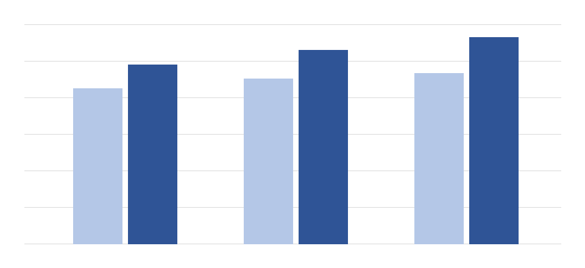

A picture on its own line, at a set width:

Centred and sized in percent of the page:
A small picture inside a line of text that goes on after it and wraps onto the next line of the paragraph.
Text wraps around a picture floated to the right. The paragraph is long enough to run down the side of the picture for several lines, so the wrap can be compared with Word's square wrapping of an anchored picture.
And around one floated to the left: again the paragraph runs down the side of the picture for several lines, and the next paragraph starts below it once the text is long enough.
A picture in a table cell, sized to the cell:
| The picture on the left takes the width of its cell. |